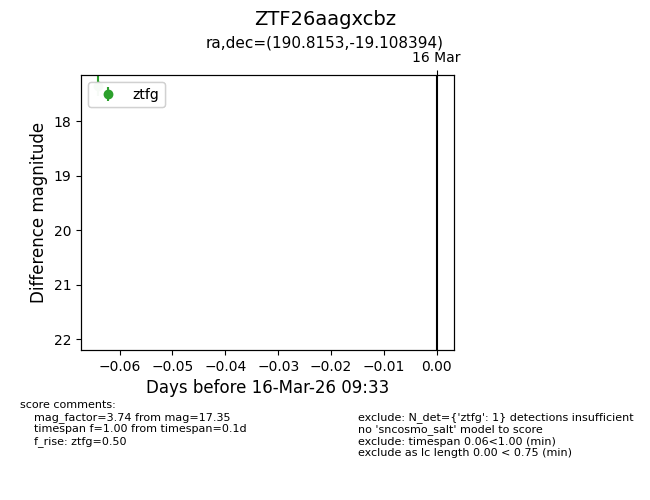
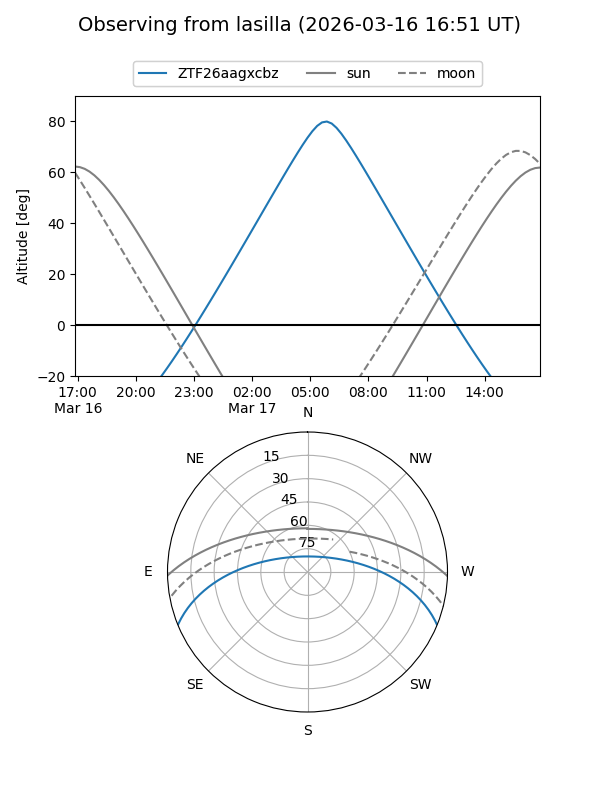
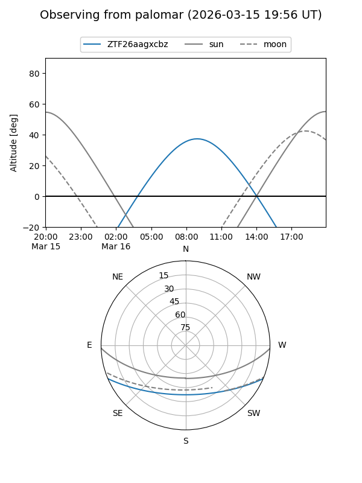

ZTF26aagxcbz
Target ZTF26aagxcbz at 2026-03-16 09:35
Aliases and brokers:
FINK: link
Lasair: link
ALeRCE: link
alt names
ZTF26aagxcbz (ztf,fink_ztf)
Coordinates:
equatorial (ra, dec) = 190.8153,-19.10839
equatorial (HMS+DMS) = 12:43:15.67,-19:06:30.22
galactic (l, b) = (300.2589,+43.72091)
Flags:
Photometry:
last ztfg=17.35
1 ztfg detections
Lightcurve

Visibility


Additional plots